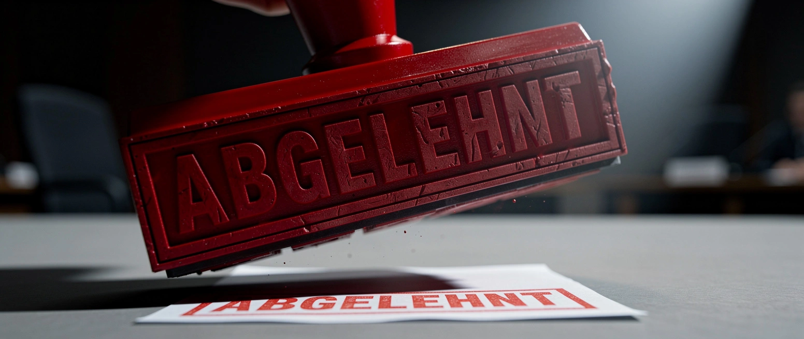

Wer verliert, sortiert aus

Reinhild Goes stand nicht auf dem Stimmzettel, obwohl die Gemeindewahlleitung sie empfohlen hatte. Am Mittwoch strich der Wahlausschuss in Nörten-Hardenberg ihre Kandidatur, einstimmig. Keine Tat, kein Urteil. Ein Gremium hat entschieden, dass die Wähler sie nicht wählen dürfen.
Sie ist der dritte Fall in drei Tagen. Am Dienstag traf es Martin Sichert in Friesland, dazu Stephan Bothe in Lüneburg. Sieben weitere AfD-Bewerber werden geprüft. Ausgesiebt wird nicht von Gerichten, sondern von Ausschüssen.
Die Voraussetzung ist alt: Ein Landrat wird Beamter auf Zeit und muss nach § 80 des Kommunalverfassungsrechts die Gewähr bieten, für die freiheitliche demokratische Grundordnung einzutreten. Neu ist nur das Verfahren, und dessen Zeitpunkt spricht für sich. Den § 45d schrieb der Landtag Ende April ins Wahlgesetz, veröffentlicht im Mai, vier Monate vor der Wahl, für die er jetzt gebraucht wird. Seither darf ein Wahlausschuss beim Verfassungsschutz nachfragen und einen Bewerber auf dessen Auskunft hin von der Liste nehmen. Wer zurückliegt, schreibt die Regeln neu, kurz bevor gespielt wird.
Die Partei ist nicht verboten. Nur das Bundesverfassungsgericht dürfte das aussprechen, und es hat einen Grund, dass allein Karlsruhe es darf: Nach 1945 sollte nie wieder eine Behörde bestimmen, wer als demokratisch gilt und wer nicht. Genau diese Sicherung wird umgangen. Was ein Verbotsverfahren mit hohen Hürden verlangt, erledigt jetzt ein kommunaler Ausschuss auf eine unverbindliche Empfehlung des Innenministeriums hin.
Wie „ergebnisoffen“ das ist, zeigt der Vergleich: In Hannover soll dieselbe Partei zugelassen werden, in Friesland, Lüneburg und Nörten-Hardenberg nicht. Gleiche Einstufung, anderes Gremium, anderes Ergebnis. Kandidaten vor der Wahl auf ihre Gesinnung prüfen und aussortieren, dieses Verfahren kennt man aus Staaten, die ihre Opposition lieber verwalten als schlagen.
Und der Gebührenfunk? Der NDR erklärt das neue Instrument wie ein Behördenmerkblatt: Die Kommunen „müssen“ die Verfassungstreue klären, „nur wenn es berechtigte Zweifel gibt, wird auch geprüft“. Kein Wort davon, dass der Landtag in den eigenen Materialien einräumt, die Anwendung bleibe „rechtlich unsicher“ und der Griff in die Verfassungsschutzakten sei „ein erheblicher Grundrechtseingriff“. Man baut ein Instrument, von dem man weiß, dass es kippen kann, und der Sender reicht das Merkblatt nach.
Sichert klagt. Bis dahin gilt die bequeme Ordnung: Wer an der Urne stärker wird, wird vor der Urne geprüft. Das nennen sie den Schutz der Demokratie.
Mehr dazu: Gewählt, aber nicht wählbar · Sogar die UN sagt es